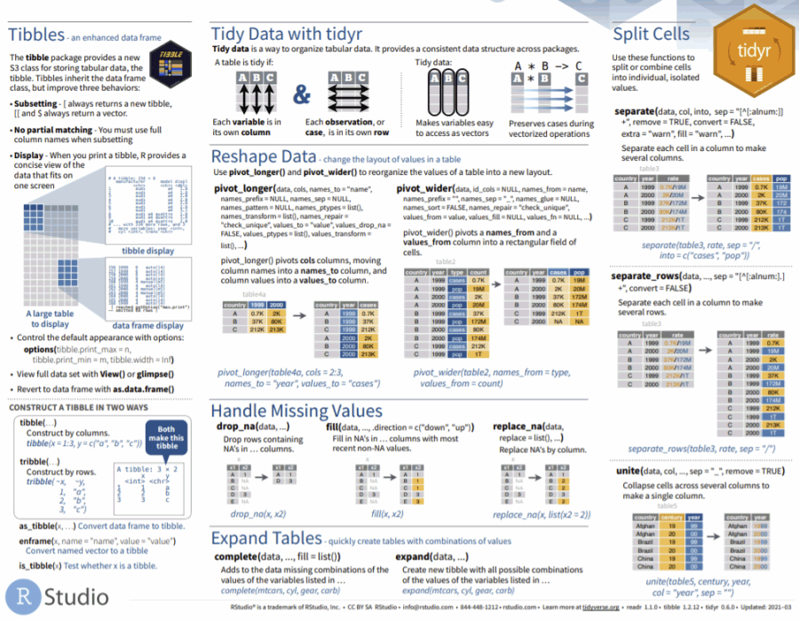

Spatial Data Analysis with R
BayGeo, Spring 2022
Manipulating Tables with dplyr

dplyr
An alternative (usually better) way to manipulate or ‘munge’ data frames
Part of the tidyverse
Good way to familiarize yourself with it: explore the cheat sheet

Useful dplyr functions
|
subset rows
|
filter(), slice()
|
|
order rows
|
arrange()
|
|
pick column(s)
|
select(), pull()
|
|
add new columns
|
mutate()
|
|
join data frames
|
left_join(), right_join(), inner_join()
|
select(), filter(), count(), and arrange() are common function names that exist in other packages. To avoid errors either:
- Preface them with
dplyr::
or
- Set your preferences using the
conflicted package:
## Load the conflicted package
library(conflicted)
# Set conflict preferences
conflict_prefer("filter", "dplyr", quiet = TRUE)
conflict_prefer("count", "dplyr", quiet = TRUE)
conflict_prefer("select", "dplyr", quiet = TRUE)
conflict_prefer("arrange", "dplyr", quiet = TRUE)
Piping
Piping is a way of writing expressions that combine multiple functions:
fun_a() %>% fun_b() %>% fun_c() %>% …
Piping allows the results of one function to be passed as the first argument of the next function. Hence a series of commands to be written like a sentence.
fun_a(x, ...) %>% fun_b(x, ...) %>% fun_c(x, ...) %>% ...
│ ￪ │ ￪
└───────────┘ └───────────┘
So the following are equivalent:
x <- st_transform(ca_counties, 4326)
x <- ca_counties %>% st_transform(4326)
Piping makes reading and writing nested expressions a lot easier!
The following are also equivalent:
plot(st_geometry(st_transform(ca_counties, 4326)))
ca_counties %>%
st_transform(4326) %>%
st_geometry() %>%
plot()
ctrl + shift + m is the RStudio keyboard shortcut to insert: %>%
Stringing Together Multiple dplyr Functions
Piping is very common with dplyr, where you often combine multiple functions in one expression:
iris %>% filter(Sepal.Length > 7) %>% mutate(width_length = Sepal.Width * Sepal.Length)
│ │ │
│ │ └─ create a new column
│ │
│ ├─ select those rows where Sepal.Length > 7
│ └─ don't have to specify the data frame
│
└ start with this data frame
Column names when used as arguments in dplyr functions should not be in quotes.
Result:
## Sepal.Length Sepal.Width Petal.Length Petal.Width Species width_length
## 1 7.1 3.0 5.9 2.1 virginica 21.30
## 2 7.6 3.0 6.6 2.1 virginica 22.80
## 3 7.3 2.9 6.3 1.8 virginica 21.17
## 4 7.2 3.6 6.1 2.5 virginica 25.92
## 5 7.7 3.8 6.7 2.2 virginica 29.26
## 6 7.7 2.6 6.9 2.3 virginica 20.02
## 7 7.7 2.8 6.7 2.0 virginica 21.56
## 8 7.2 3.2 6.0 1.8 virginica 23.04
## 9 7.2 3.0 5.8 1.6 virginica 21.60
## 10 7.4 2.8 6.1 1.9 virginica 20.72
## 11 7.9 3.8 6.4 2.0 virginica 30.02
## 12 7.7 3.0 6.1 2.3 virginica 23.10
dplyr functions return tibbles, which are essentially data frames with a couple of minor tweaks. More info.
Subset rows with filter() and slice()
Use filter() when you want to extract rows based on a conditional expression:
library(dplyr)
# Select rows where Sepal.Length > 7
iris %>% filter(Sepal.Length > 7)
## Sepal.Length Sepal.Width Petal.Length Petal.Width Species
## 1 7.1 3.0 5.9 2.1 virginica
## 2 7.6 3.0 6.6 2.1 virginica
## 3 7.3 2.9 6.3 1.8 virginica
## 4 7.2 3.6 6.1 2.5 virginica
## 5 7.7 3.8 6.7 2.2 virginica
## 6 7.7 2.6 6.9 2.3 virginica
## 7 7.7 2.8 6.7 2.0 virginica
## 8 7.2 3.2 6.0 1.8 virginica
## 9 7.2 3.0 5.8 1.6 virginica
## 10 7.4 2.8 6.1 1.9 virginica
## 11 7.9 3.8 6.4 2.0 virginica
## 12 7.7 3.0 6.1 2.3 virginica
To filter based on multiple criteria with “AND” logic (both criteria must be met), add additional conditional expressions:
# Select rows where Sepal.Length > 7 AND Species is virginica
iris %>% filter(Sepal.Length > 7, Species=="virginica")
## Sepal.Length Sepal.Width Petal.Length Petal.Width Species
## 1 7.1 3.0 5.9 2.1 virginica
## 2 7.6 3.0 6.6 2.1 virginica
## 3 7.3 2.9 6.3 1.8 virginica
## 4 7.2 3.6 6.1 2.5 virginica
## 5 7.7 3.8 6.7 2.2 virginica
## 6 7.7 2.6 6.9 2.3 virginica
## 7 7.7 2.8 6.7 2.0 virginica
## 8 7.2 3.2 6.0 1.8 virginica
## 9 7.2 3.0 5.8 1.6 virginica
## 10 7.4 2.8 6.1 1.9 virginica
## 11 7.9 3.8 6.4 2.0 virginica
## 12 7.7 3.0 6.1 2.3 virginica
To filter with “OR” logic (or a mix of AND and OR), use a single conditional expression with the ‘&’ (and) and ‘|’ (or) operators. Example:
iris %>%
filter(Sepal.Length > 5.6 & (Species=="virginica" | Species=="setosa"))
This expression returns rows where Sepal.Length > 5.6 AND the Species is virginica OR setosa.
slice() allows you to subset based on row numbers:
## Get the 21st through 30th rows
iris %>% slice(21:30)
## Sepal.Length Sepal.Width Petal.Length Petal.Width Species
## 1 5.4 3.4 1.7 0.2 setosa
## 2 5.1 3.7 1.5 0.4 setosa
## 3 4.6 3.6 1.0 0.2 setosa
## 4 5.1 3.3 1.7 0.5 setosa
## 5 4.8 3.4 1.9 0.2 setosa
## 6 5.0 3.0 1.6 0.2 setosa
## 7 5.0 3.4 1.6 0.4 setosa
## 8 5.2 3.5 1.5 0.2 setosa
## 9 5.2 3.4 1.4 0.2 setosa
## 10 4.7 3.2 1.6 0.2 setosa
Sort rows with arrange()
Sort rows with arrange()
## Sort rows by Sepal.Length, return the first 10
iris %>% arrange(Sepal.Length) %>% slice(1:10)
## Sepal.Length Sepal.Width Petal.Length Petal.Width Species
## 1 4.3 3.0 1.1 0.1 setosa
## 2 4.4 2.9 1.4 0.2 setosa
## 3 4.4 3.0 1.3 0.2 setosa
## 4 4.4 3.2 1.3 0.2 setosa
## 5 4.5 2.3 1.3 0.3 setosa
## 6 4.6 3.1 1.5 0.2 setosa
## 7 4.6 3.4 1.4 0.3 setosa
## 8 4.6 3.6 1.0 0.2 setosa
## 9 4.6 3.2 1.4 0.2 setosa
## 10 4.7 3.2 1.3 0.2 setosa
1) To sort in reverse order (i.e., largest to smallest), wrap the column name in desc():
iris %>% arrange(desc(Sepal.Length)) %>% slice(1:10)
## Sepal.Length Sepal.Width Petal.Length Petal.Width Species
## 1 7.9 3.8 6.4 2.0 virginica
## 2 7.7 3.8 6.7 2.2 virginica
## 3 7.7 2.6 6.9 2.3 virginica
## 4 7.7 2.8 6.7 2.0 virginica
## 5 7.7 3.0 6.1 2.3 virginica
## 6 7.6 3.0 6.6 2.1 virginica
## 7 7.4 2.8 6.1 1.9 virginica
## 8 7.3 2.9 6.3 1.8 virginica
## 9 7.2 3.6 6.1 2.5 virginica
## 10 7.2 3.2 6.0 1.8 virginica
2) To sort on multiple columns, simply add additional field names to arrange().
Sort iris first by Sepal.Length, then (when there are ties) by Sepal.Width:
iris %>% arrange(Sepal.Length, Sepal.Width) %>% slice(1:10)
## Sepal.Length Sepal.Width Petal.Length Petal.Width Species
## 1 4.3 3.0 1.1 0.1 setosa
## 2 4.4 2.9 1.4 0.2 setosa
## 3 4.4 3.0 1.3 0.2 setosa
## 4 4.4 3.2 1.3 0.2 setosa
## 5 4.5 2.3 1.3 0.3 setosa
## 6 4.6 3.1 1.5 0.2 setosa
## 7 4.6 3.2 1.4 0.2 setosa
## 8 4.6 3.4 1.4 0.3 setosa
## 9 4.6 3.6 1.0 0.2 setosa
## 10 4.7 3.2 1.3 0.2 setosa
3) See also top_n()
Choose columns with select() & pull()
Often you have more columns than you need. You can ask for specific columns using select():
iris %>% select(Petal.Length, Species) %>% slice(1:10)
## Petal.Length Species
## 1 1.4 setosa
## 2 1.4 setosa
## 3 1.3 setosa
## 4 1.5 setosa
## 5 1.4 setosa
## 6 1.7 setosa
## 7 1.4 setosa
## 8 1.5 setosa
## 9 1.4 setosa
## 10 1.5 setosa
To reorder columns, see also relocate()
Getting a single column
If you pass a single column name to select(), you still get a data frame back. To get a single column back as a vector, use pull():
iris %>% select(Petal.Length) %>% slice(1:10) ## this is still a data frame
## Petal.Length
## 1 1.4
## 2 1.4
## 3 1.3
## 4 1.5
## 5 1.4
## 6 1.7
## 7 1.4
## 8 1.5
## 9 1.4
## 10 1.5
iris %>% pull(Petal.Length) ## returns a vector
## [1] 1.4 1.4 1.3 1.5 1.4 1.7 1.4 1.5 1.4 1.5 1.5 1.6 1.4 1.1 1.2 1.5 1.3 1.4 1.7 1.5 1.7 1.5 1.0 1.7 1.9 1.6
## [27] 1.6 1.5 1.4 1.6 1.6 1.5 1.5 1.4 1.5 1.2 1.3 1.4 1.3 1.5 1.3 1.3 1.3 1.6 1.9 1.4 1.6 1.4 1.5 1.4 4.7 4.5
## [53] 4.9 4.0 4.6 4.5 4.7 3.3 4.6 3.9 3.5 4.2 4.0 4.7 3.6 4.4 4.5 4.1 4.5 3.9 4.8 4.0 4.9 4.7 4.3 4.4 4.8 5.0
## [79] 4.5 3.5 3.8 3.7 3.9 5.1 4.5 4.5 4.7 4.4 4.1 4.0 4.4 4.6 4.0 3.3 4.2 4.2 4.2 4.3 3.0 4.1 6.0 5.1 5.9 5.6
## [105] 5.8 6.6 4.5 6.3 5.8 6.1 5.1 5.3 5.5 5.0 5.1 5.3 5.5 6.7 6.9 5.0 5.7 4.9 6.7 4.9 5.7 6.0 4.8 4.9 5.6 5.8
## [131] 6.1 6.4 5.6 5.1 5.6 6.1 5.6 5.5 4.8 5.4 5.6 5.1 5.1 5.9 5.7 5.2 5.0 5.2 5.4 5.1
Add columns with mutate()
Adding columns is easy with mutate(). The argument(s) to mutate() should be formula expression(s) that can include column names.
Example 1: Add a column to iris containing the ratio of the petal width to length.
iris %>%
mutate(petal_w2l_ratio = Petal.Width / Petal.Length) %>%
slice(1:10)
## Sepal.Length Sepal.Width Petal.Length Petal.Width Species petal_w2l_ratio
## 1 5.1 3.5 1.4 0.2 setosa 0.14285714
## 2 4.9 3.0 1.4 0.2 setosa 0.14285714
## 3 4.7 3.2 1.3 0.2 setosa 0.15384615
## 4 4.6 3.1 1.5 0.2 setosa 0.13333333
## 5 5.0 3.6 1.4 0.2 setosa 0.14285714
## 6 5.4 3.9 1.7 0.4 setosa 0.23529412
## 7 4.6 3.4 1.4 0.3 setosa 0.21428571
## 8 5.0 3.4 1.5 0.2 setosa 0.13333333
## 9 4.4 2.9 1.4 0.2 setosa 0.14285714
## 10 4.9 3.1 1.5 0.1 setosa 0.06666667
Example 2: New columns don’t have to be based on other columns. Create a new column called “group” and fill it with a roughly equal number of ‘training’ and ‘validation’ values:
iris %>%
mutate(group = sample(c("training", "validation"), size = nrow(iris), replace = TRUE)) %>%
slice(1:10)
## Sepal.Length Sepal.Width Petal.Length Petal.Width Species group
## 1 5.1 3.5 1.4 0.2 setosa training
## 2 4.9 3.0 1.4 0.2 setosa training
## 3 4.7 3.2 1.3 0.2 setosa validation
## 4 4.6 3.1 1.5 0.2 setosa training
## 5 5.0 3.6 1.4 0.2 setosa validation
## 6 5.4 3.9 1.7 0.4 setosa training
## 7 4.6 3.4 1.4 0.3 setosa training
## 8 5.0 3.4 1.5 0.2 setosa training
## 9 4.4 2.9 1.4 0.2 setosa training
## 10 4.9 3.1 1.5 0.1 setosa training
transmute() does the same things as mutate(), but only the new column(s) are returned.
Group and Summarize
A common task in analysis is to group rows according to the values in a column, and then for each group of rows compute a statistic like mean, max, or count.
To do this with dplyr, use group_by() followed by summarise() or count().
Example: For each iris species, count the number of rows:
iris %>%
group_by(Species) %>%
count()
## # A tibble: 3 x 2
## # Groups: Species [3]
## Species n
## <fct> <int>
## 1 setosa 50
## 2 versicolor 50
## 3 virginica 50
summarise()
summarise() receives groups of rows generates new column(s) with summary statistics (or other aggregate outputs). The argument(s) to summarise() should be formula expression(s) which define the name of a new column and how it should be calculated. Example:
summarise( avg_petal_length = mean(Petal.Length) )
Each group of rows will be fed into summarise(). Therefore when the formula expression includes column names (typical), column names should be placed into a aggregate function like sum() that accepts multiple values and returns a single value.
Example: For each iris species, calculate the mean Petal.Length and Petal.Width:
# For each Species, compute the mean petal length and width
iris %>% group_by(Species) %>%
summarise(avg_petal_length = mean(Petal.Length), avg_petal_width = mean(Petal.Width))
## # A tibble: 3 x 3
## Species avg_petal_length avg_petal_width
## <fct> <dbl> <dbl>
## 1 setosa 1.46 0.246
## 2 versicolor 4.26 1.33
## 3 virginica 5.55 2.03
If you omit group_by(), summarise() will operate on all the rows in the data frame. Example:
iris %>% summarise(biggest_petal_length = max(Petal.Length))
## biggest_petal_length
## 1 6.9
Note that summarise() always returns a data frame. To convert to a single column into a vector use pull().
Joining Tables

To join two data frames based on a common field, you can use:
where x and y are data frames, and by is the name of a column they have in common.
If there is only one column in common, and if it has the same name in both data frames, you can omit the by argument.
If the common column is named differently in the two data frames, you can deal with that by passing a named vector as the by argument. See below.
To illustrate a table join, we’ll first import a csv with some fake data about the genetics of different iris species:
iris_genetics <- read.csv("./data/iris_genetics.csv")
## Create a data frame with additional info about the three IRIS species
# iris_genetics <- data.frame(Species=c("setosa", "versicolor", "virginica"),
# num_genes = c(42000, 41000, 43000),
# prp_alles_recessive = c(0.8, 0.76, 0.65))
iris_genetics
## X Species num_genes prp_alles_recessive
## 1 1 setosa 42000 0.80
## 2 2 versicolor 41000 0.76
## 3 3 virginica 43000 0.65
We can join these additional columns to the iris data frame with left_join():
iris %>%
left_join(iris_genetics, by = "Species") %>%
slice(1:10)
## Sepal.Length Sepal.Width Petal.Length Petal.Width Species X num_genes prp_alles_recessive
## 1 5.1 3.5 1.4 0.2 setosa 1 42000 0.8
## 2 4.9 3.0 1.4 0.2 setosa 1 42000 0.8
## 3 4.7 3.2 1.3 0.2 setosa 1 42000 0.8
## 4 4.6 3.1 1.5 0.2 setosa 1 42000 0.8
## 5 5.0 3.6 1.4 0.2 setosa 1 42000 0.8
## 6 5.4 3.9 1.7 0.4 setosa 1 42000 0.8
## 7 4.6 3.4 1.4 0.3 setosa 1 42000 0.8
## 8 5.0 3.4 1.5 0.2 setosa 1 42000 0.8
## 9 4.4 2.9 1.4 0.2 setosa 1 42000 0.8
## 10 4.9 3.1 1.5 0.1 setosa 1 42000 0.8
If you need to join tables on multiple columns, add additional column names to the by argument.
Join columns must be the same data type (i.e., both numeric or both character).
There are several variants of left_join(), the most common being right_join() and inner_join(). See help for details.
Joining Tables When the Column Name is Different
If the join column is named differently in the two tables, you can pass a named character vector as the by argument. A named vector is a vector whose elements have been assigned names. You can construct a named vector with c().

For example if the join column was named ‘SpeciesName’ in x, and just ‘Species’ in y, your expression would be:
left_join(x, y, by = c("SpeciesName" = "Species"))
Reshaping Data
Reshaping data includes
- turning rows into columns (aka pivot tables, cross tab query)
- turning columns into rows
The go-to package for reshaping data frames is tidyr
The two most common tidyr functions:
pivot_longer()

pivot_wider()

These and many other reshaping functions are described on page 2 of the Data Import Cheatsheet.

Summary
Today we saw:
- how to pipe together
dplyr functions to:
- subset and sort rows in a data frame
- select columns
- group and summarise rows
- create new columns
- join tables based a common column
Next: Working with Attribute Tables